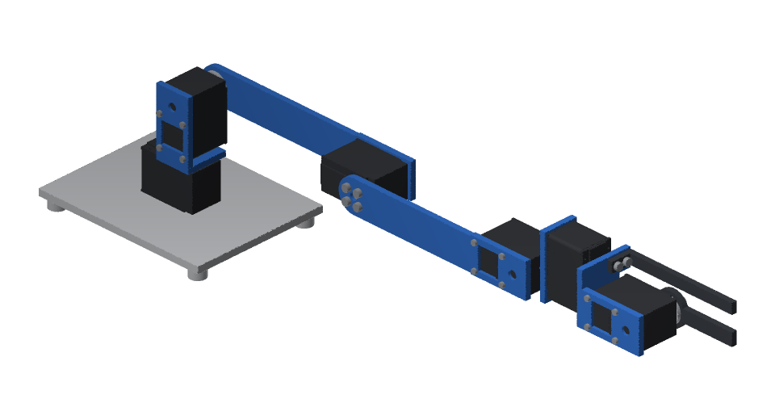
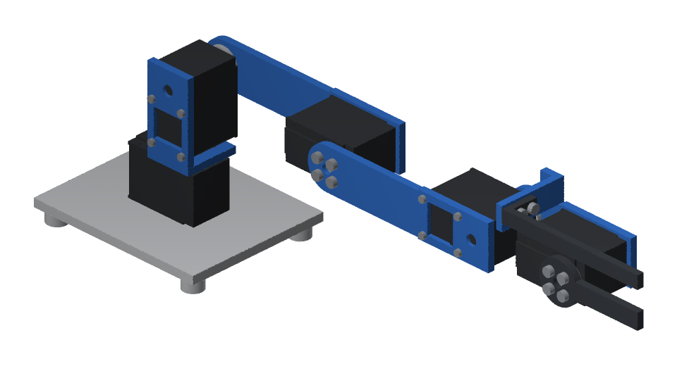
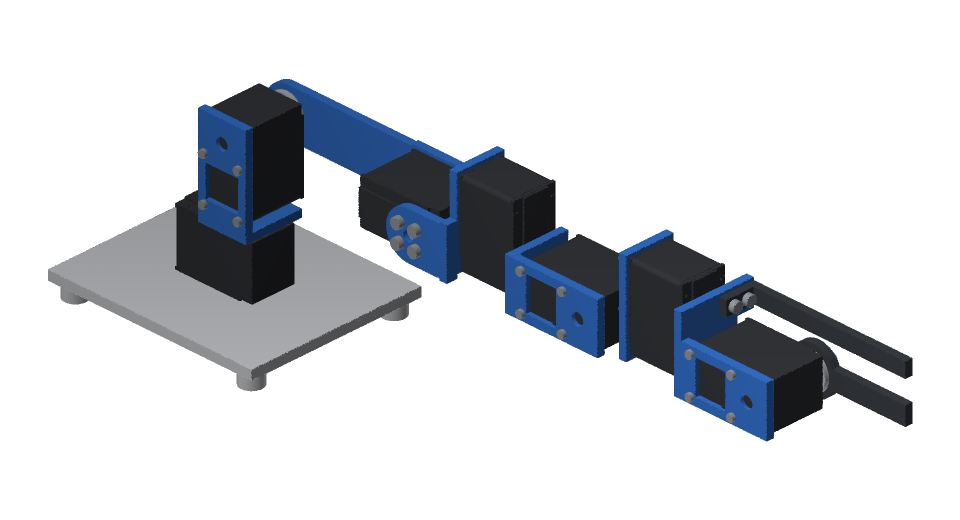

RobotDSL Team designs
Print a robot
Ten robots of the RobotDSL Team's own design, drawn as CAD in code, to print yourself: every piece as STL and STEP, how to print it, and what to buy.
Walking robots
On ROBOTIS Dynamixel XM430-W350 servos


Arms
On Feetech STS3215 servos
 RobotDSL ArmFive joints and a gripper, reaching 365 mm
RobotDSL ArmFive joints and a gripper, reaching 365 mm- Pieces
- 8
- Servos
- 6
- Reach
- 365 mm
 RobotDSL Compact ArmFour joints and a gripper, reaching 251 mm
RobotDSL Compact ArmFour joints and a gripper, reaching 251 mm- Pieces
- 7
- Servos
- 5
- Reach
- 251 mm
 RobotDSL Drawing ArmFour joints and a pen, drawing on A4
RobotDSL Drawing ArmFour joints and a pen, drawing on A4- Pieces
- 5
- Servos
- 4
- Reach
- 361 mm

RobotDSL Long ArmFive joints and a gripper, reaching 455 mm- Pieces
- 8
- Servos
- 6
- Reach
- 455 mm

RobotDSL Pick ArmFour joints and a gripper, reaching 325 mm- Pieces
- 7
- Servos
- 5
- Reach
- 325 mm

RobotDSL Six-Axis ArmSix joints and a gripper, reaching 365 mm- Pieces
- 9
- Servos
- 7
- Reach
- 365 mm